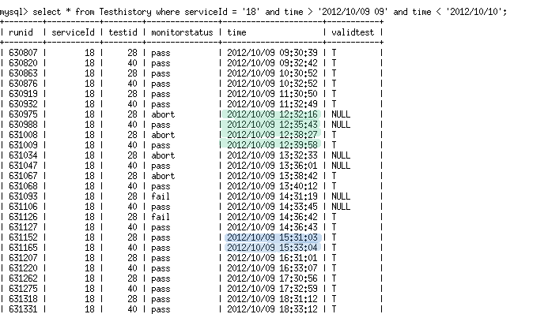

VAOMonitor DB design
The Vaomonitor DB consists of 5 tables. They are:
- Services
- Tests
- Testhistory
- Errors
- ErrorCodes
Services
The Services table has 6 columns. They are serviceId,name, homeinst (home institution),homeurl,type,and
displayorder. A brief description of each follows:
- serviceId - the primary key used to join the Services and Tests table.
- name - the name of the VO service (E.g. JIRA)
- homeinst- the shortname of the center hosting the service
- homeurl-the url of the home institution
- type-The type of service. The values are one of "Portal Science Sercvices", "Testing", "Legacy Support Services","Legacy
Science Services", and "System".
These values are only used by the vaomonitor home page to group services in a particular way.
- displayorder-this column is only used to order services in a particular way on the vao home page.
Tests
The Tests table has 9 columns. They are testid,serviceId, url, response_type,class,testname,deleted, notAvailable,and params.
A brief description of each follows.
- testid-a unique id associated with a test for a given service. E.g. The VOInventory Service currently has two unique tests associated
with it. One test checks that the top level irsa.ipac page is up while the second greps a string from an xml response to an IRSA query
with positional information.
- serviceId-the primary key used to join the Services and Tests table.
- url-the url we want to test. Most services have a default GET url that will return XML when queried with positional information.
Services that cannot be queried in this way are assigned specialized Perl tests to ensure that the service is operational.
- response_type-the response type returned by the url listed in the url column. This will be either html or xml.
- class-the name of the Perl class used to drive the test.
- testname- a simple human readable test name assigned to the test. This is used by the VAO interactive testing page. We added this
column
so that users will be able to select the type of test they wish to run on a site by selecting it from a drop-down list.
- deleted-the value here is either 'T' or null. If the value is 'T', the test for a given service is invisible in the history
pages and in the interactive pages.
- notAvailable-this value is either 'T' or null.This column was created so that the string 'skip' appears in the db table when the test is
executed. The original idea behind this column was that users would be able to see that this test still exists for a service on the vaomonitor interactive page.
In addition, the hope was that any service marked as unavailable would eventually be fixed.This should not be confused with the deleted column which makes
the test invisible in the interactive monitor and in the vao service status history pages.
- params-the values in here are semicolon delimited and are used in grep routines in some of the specialized tests.
Testhistory
The Testhistory table has 6 columns. They are runid, serviceId,testid,monitorstatus,time and validtest.
A brief description of each column follows.
- runid- a unique id assiged at runtime to the test being executed. This column is used to join information with the Errors table
- serviceId-the primary key used to join the Services and Tests table
- testid- a unique id associated with a test for a given service. This is the same column as the one in the Tests table.
- monitorstatus-the status of the test. This is either pass, fail, abort or skip.
- time-the timestamp associated with when a test was run
- validtest-this column is used in the automated notification system which mails users when a test has failed or when the service has come back up.
The value is either 'T' which indicates that this is a valid test (i.e. one we want to evaluate in processing) or null. This column is very important as it
is updated hourly and is needed for the automated notification system to work. A brief summary of how this column is used and
updated follows.
The following history is for serviceId 18 (the VO Inventory Service)

- When a test is executed,we have to find out if the test failed or aborted. If this is the case, we perform a retest
10 minutes later.
- All retests receive a 'T' in the validtest column.
- Any test that passes the first time(i.e. does not require a retest) also
receives a 'T' in the validtest column. This approach for marking a
valid test is very useful when querying the table
and has the added bonus that we can tell right away from looking at the table which lines
are to be ignored ( nulls are ignored).
- The lines highlighted in green show that of the 2 tests associated with serviceId 18(testid 28 and 40), one aborted (testid 28) and the other passed.
This is
considered an overall failure and the service was retested a few minutes later. Note that a 'T' was added to the validtest column for both
testid 28 and testid 40.
- Subsequent hourly testing showed that the service continued to fail. The notification system compares the latest overall *valid* status for a service
to the previous hour's *valid* status and only sends mail if there is a change.
- The lines highlighted in blue show the next time that both tests passed as a pair and when a notification was
sent out to the curator.
Errors
The Errors table has 3 columns. They are runid,subtestid,and monitorResCode. A brief description of each follows.
-
runid- a unique id assiged at runtime to the test being executed. This column is used to join information with the Tests table.
- subtestid-this is an id that comes from the particular Perl class that is handling a test. An important note here is that these ids do not map 1 to 1
with a particular error message.There could be different messages associated with the same subtestid. Another important note here is the difference
between this column and the one in the validation db Errors table. In the validation db, most of the subtestids comes from the NCSA validators whereas
in the vaomonitor context,we created our own subtestids.
- monitorResCode -this column joins information with the ErrorCodes table.Each entry is an integer that maps 1 to 1 with an error message in the ErrorCodes
table. In this table therefore, there can be many identical monitorResCode entries in the monitorResCode column but there will be only one error message
associated with this number in the ErrorCodes table.
Error Codes
The Error Codes table has 2 columns. They are monitorResCode and description. A brief description of each follows.
- monitorResCode- this is the column that ties this table to the Errors table.
- description-this is the error message associated with a failed or aborted test.Error messages are short and unlike some very long messages
in the validation system, they obviously do not need to be truncated.
*Information in this table is joined with the Errors and Tests table so that users get the correct error message associated with
a unique test run.
|
|
Member
 |
Meet the Developers
 |
Hosted by the Astrophysics Science Divisionand the
High Energy Astrophysics Science Archive Research Center (HEASARC)at
NASA/GSFC
HEASARC Director:
Dr. Nicholas E. White,
HEASARC Associate Director: Dr. Roger Brissenden,
Responsible NASA Official:
Phil Newman
Privacy, Security, Notices